{kind=link}
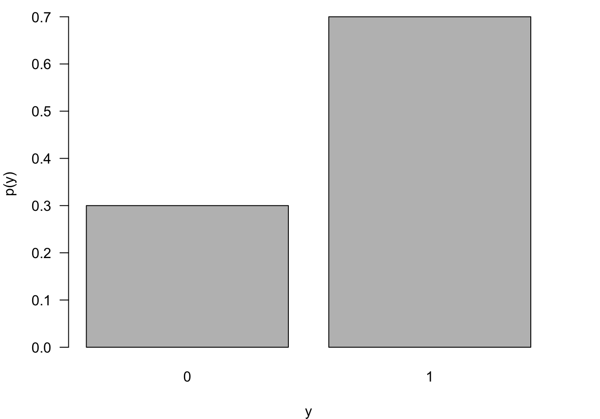
28 Generalized Linear Models
28.1 Introduction
We have encountered generalized linear models (GLMs) throughout the material and one could argue why they belong into a segment of advanced supervised learning techniques. After all, generalized linear models are very common today. We have placed them here because this part of the material is more “mathy” than previous sections and we want to dive a bit more into the distributional properties of the models in this part of the material than in other parts.
The generalization of GLMs is found in a comparison to the classical linear model with Gaussian errors: \[ Y = \textbf{x}^\prime\boldsymbol{\beta}+ \epsilon, \quad \epsilon \sim \textit{ iid } G(0, \sigma^2) \] Because of the linearity property of Gaussian random variables, the normality of \(\epsilon\) transfers to \(Y\): \(Y \sim \textit{ iid } G(\textbf{x}^\prime\boldsymbol{\beta},\sigma^2)\). We are now relaxing several elements of this model:
- The distribution of \(Y\) does not have to be Gaussian.
- The relationship between the inputs and the mean of \(Y\) does not have to be linear in the coefficients.
- The model does not have an additive error structure.
- The target variables do not have to have the same variance.
However, the relaxation of the model conditions is not without limits. Rather than allowing \(Y\) to have any distribution, its distribution has to be a member of a special family of probability distributions. Rather than allowing any arbitrary nonlinear relationship between inputs and target, only certain (invertible) transformations are permitted; the effect of the inputs remains linear on some scale, although it is usually not the scale of the mean. Rather than allowing any arbitrary variance, the variance of the targets can be unequal but it is determined through the distribution itself.
This sounds like we are placing many restrictions on the relaxations but it turns out that the class of generalized linear models is very broad and general. A generalized linear model has the following components:
- The distribution of \(Y\) is a member of the exponential family of distributions (Section 28.2).
- The effects are a linear combination of the inputs, called the linear predictor \(\eta = \textbf{x}^\prime\boldsymbol{\beta}\).
- The linear predictor \(\eta = \textbf{x}^\prime\boldsymbol{\beta}\) is related to the mean through a link function \(g(\mu) = \eta\) (Section 28.3).
A further generalization of the generalization is achieved by modeling the effects of the inputs through smooth local elements (see Chapter 11), and not just through global effects. The linear predictor now is a combination of smooth functions of the inputs, \[ \eta = \beta_0 + f_1(x_1) + f_2(x_2) + \cdots \] This is the structure of generalized additive models (GAMs). A semi-parametric version combines global effects with smooth local effects, for e example \[ \eta = \beta_0 + \beta_1 x_1 + f_2(x_2) \] These linear predictor types make up the family of generalized models in Figure 28.1.
28.2 Exponential Family of Distributions
Definition
The exponential family of distributions, \(P_{expo}\) comprises important discrete and continuous distributions (Figure 28.1), the exponential distribution is one particular member of the family. How do we know whether a distribution belongs to the family? If you can write its mass or density function in a particular form, then the distribution is a member. We follow here (for the most part) the notation in the seminal work on GLMs by McCullagh and Nelder Frs (1989).
Definition: Exponential Family of Distributions
The distribution of random variable \(Y\) is a member of \(P_{expo}\), the exponential family of distributions, if its density or mass function can be written as \[ p(y) = \exp\left\{(y\theta - b(\theta))/\psi + c(y,\psi)\right\} \tag{28.1}\]
for some functions \(b(\cdot)\) and \(c(\cdot)\).
\(\theta\) is called the natural parameter and \(\psi\) is related to the scale (dispersion) of \(Y\). Not all members of \(P_{expo}\) feature this parameter. Those that do are said to be in the two-parameter exponential family.
When \(\theta\) is expressed as a function of the mean \(\mu = \text{E}[Y]\), the function \(\theta(\mu)\) is called the canonical (natural) link function of the distribution.
Distributions in the exponential family have many fascinating properties. Among them,
\[\frac{\partial b(\theta(\mu))}{\partial \theta} = b^\prime(\theta) = \mu\]
\[\frac{\partial^2 b(\theta(\mu))}{\partial \theta^2} = b^{\prime\prime}(\theta) = \text{Var}[Y]\] The first result states that \(b^\prime(\theta) = \mu\) is the inverse canonical link function. \(b^{\prime\prime}(\theta)\), when written as a function of \(\mu\), is called the variance function of the distribution.
The Bernoulli in Exponential Form
The expressions for mass functions or densities we have worked with so far are not written in the form of \(P_{expo}\). The mass function of the Bernoulli() distribution, for example, is usually written as \[ p(y) = \pi^y (1-\pi)^{1-y}, \quad y \in \{0,1\} \] If we rewrite this to fit Equation 28.1, we should be able to peel off \(\theta\), \(b(\theta)\), then we can identify link function and variance function of the generalized linear model. Let’s start by replacing \(\pi\), the event probability of the Bernoulli with the symbol \(\mu\), \(\pi\) is the mean of \(Y\) after all. Then, put the mass function into an exponent while applying logarithms and collect terms: \[ \begin{align*} p(y) &= \mu^y (1-\mu)^{1-y} \\ &= \exp\{y \log \mu + (1-y) \log (1-\mu) \} \\ &= \exp\left\{y \log\left(\frac{\mu}{1-\mu} \right) + \log(1-\mu)\right\} \end{align*} \] Compare this expression to Equation 28.1 and identify:
- \(\theta(\mu) = \log(\mu/(1-\mu))\)
- \(b(\theta) = -\log(1-\mu)\)
- \(\psi = 1\)
- \(c(y,\psi) = 0\).
Solve 1. for \(\mu\) and plug into 2. to get \(b(\theta) = \log(1+e^\theta)\). Now you can take first and second derivatives with respect to \(\theta\): \[ \begin{align*} b^\prime(\theta) &= e^\theta/(1+e^{\theta}) = \mu\\ b^{\prime\prime}(\theta) &= \mu(1-\mu) \end{align*} \] The canonical (natural) link function for the Bernoulli distribution is the logit function: \(\text{logit}(\mu) = \log(\mu/(1-\mu))\). The inverse link function \(b^\prime(\theta)\) is the logistic function \[ b^\prime(\theta) = \frac{e^\theta}{1+e^{\theta}} = \frac{1}{1+e^{-\theta}} \] Logistic regression derives its name from this inverse link function.
The specification of a generalized linear model for binary data is now complete by equating the natural parameter with the linear predictor: \[ \begin{align*} Y &\sim \text{Bernoulli}(\mu) \\ \eta &= \textbf{x}^\prime\boldsymbol{\beta}\\ g(\mu) &= \log \left(\frac{\mu}{1-\mu} \right) = \eta \\ g^{-1}(\eta) &= \frac{1}{1+e^{-\eta}} = \mu \end{align*} \]
We generally use the notation \(g(\mu)\) for the link function and \(g^{-1}(\mu)\) for the inverse link function, rather than \(\theta(\mu)\) and \(b^\prime(\theta)\) as suggested by the \(P_{expo}\) notation. The reason for the general notation is that the canonical link is just one of the possible link functions, we are free to choose others (Section 28.3). Using the canonical link in the specification of a GLM typically has certain computational advantages, but for some distributions the canonical link is not a good mapping between mean and linear predictor.
Distributions
We now review some of the discrete and continuous distributions in \(P_{expo}\)
Discrete distributions
Bernoulli
The most elementary random experiment is the Bernoulli experiment, two possible outcomes \(Y=1\) and \(Y=0\) occur with probability \(\pi\) and \(1-\pi\), respectively. The outcome coded \(Y=1\) is called the event of the experiment. The outcome coded \(Y=0\) is called the non-event. As we established earlier, the Bernoulli(\(\pi\)) distribution is a member of the exponential family with mean \(\pi\), canonical link \(\log(\pi/(1-\pi))\) and variance function \(\pi(1-\pi)\) (Figure 28.2).
Although elementary, the Bernoulli(\(\pi\)) is very important as the underlying model for logistic regression and because many other distributions are defined in terms of Bernoulli experiments.Consider a sequence \(Y_1, Y_2, \cdots\) of independent Bernoulli(\(\pi\)) experiments. The following members of \(P_{expo}\) are defined in terms of the \(Y_i\):
- Binomial\((n,\pi)\): the number of events in \(n\) experiments.
- Geometric\((\pi)\): the number of experiments until 1st event.
- Geometric\(^*(\pi)\): the number of non-events before the 1st event
- Negative Binomial\((k,\pi)\): the number of experiments until \(k\)th event.
- Negative Binomial\(^*(k,\pi)\): the number of non-events before the \(k\)th event.
Binomial
The number of events \(X = \sum_{i=1}^n Y_i\) in a sequence \(Y_1, Y_2, \cdots, Y_n\) of independent Bernoulli (\(\pi\)) events is a Binomial(\(n,\pi\)) random variable \[ \begin{align*} p(x) &= {n \choose x} \pi^x \, (1-\pi)^{n-x} \quad x=0,1,\cdots, n \\ \text{E}[X] &= n\pi \\ \text{Var}[X] &= n\pi(1-\pi) \end{align*} \]
\({n \choose x}\) is the binomial coefficient: \({n \choose x} = \frac{n!}{x!(n-x)!}\), the number of ways in which an unordered subset of size \(k\) can be chosen from \(n\) items.
The support of the Binomial(\(n,\pi\)) is \(0,\cdots,n\). You cannot observe fewer than 0 events and you cannot observe more than \(n\) events (Figure 28.3). The Binomial is thus a suitable probability model for count data that represents the number of events out of a total number. For example, the number of livestock herds out of all herds in a state that show incidences of pneumonia or the number of defective items out of a lot of 100 items. Such count variables are sometimes referred to as counts with a natural denominator.
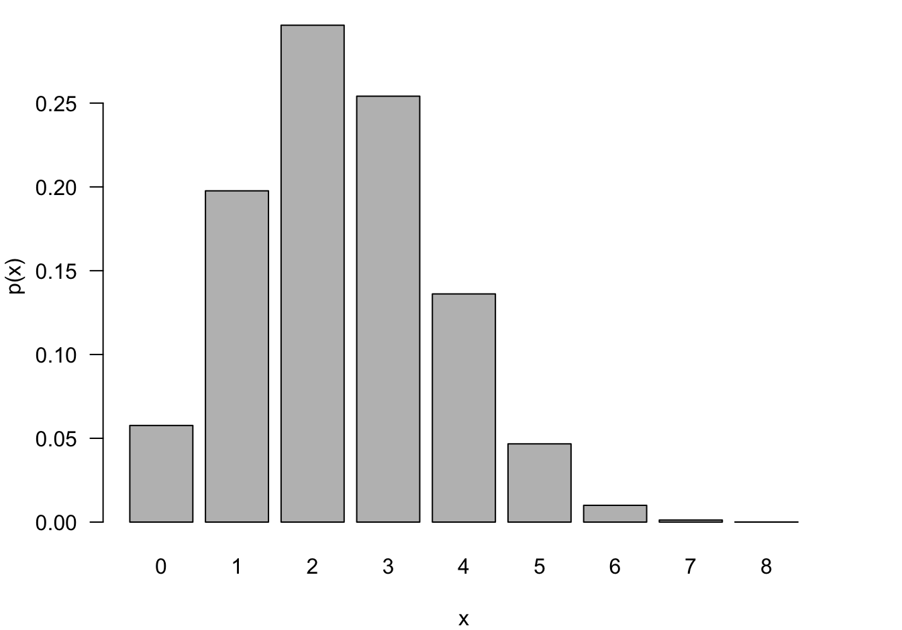
Negative Binomial and Geometric
The Geometric and Negative Binomial distributions have infinite support, \(Y \in \{0,1, \cdots\}\). Having to wait very long until the 1st (or \(k\)th) event occurs is unlikely if \(\pi\) is large but it is not impossible. The Geometric distribution is obviously a special case of the Negative Binomial for \(k=1\). These models are frequently used to model counts that do not have a natural demoninator, for example, the number of occurrences per day, per 100,000 population, or per mile.
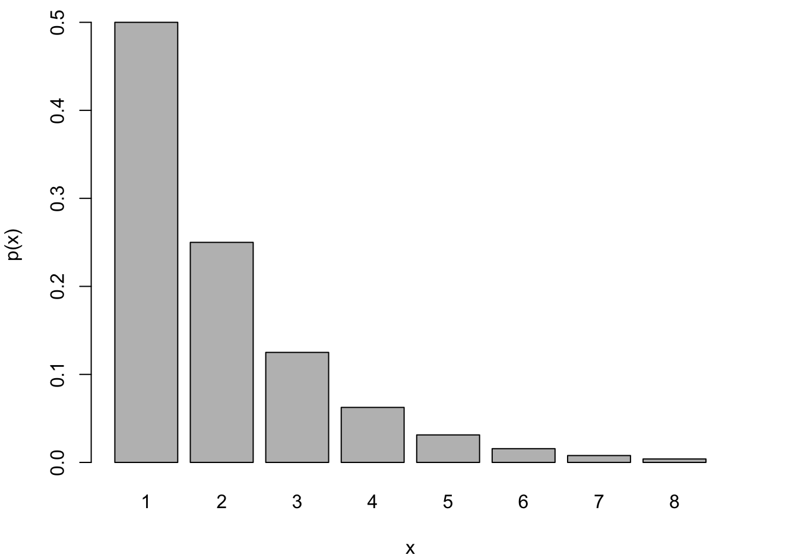
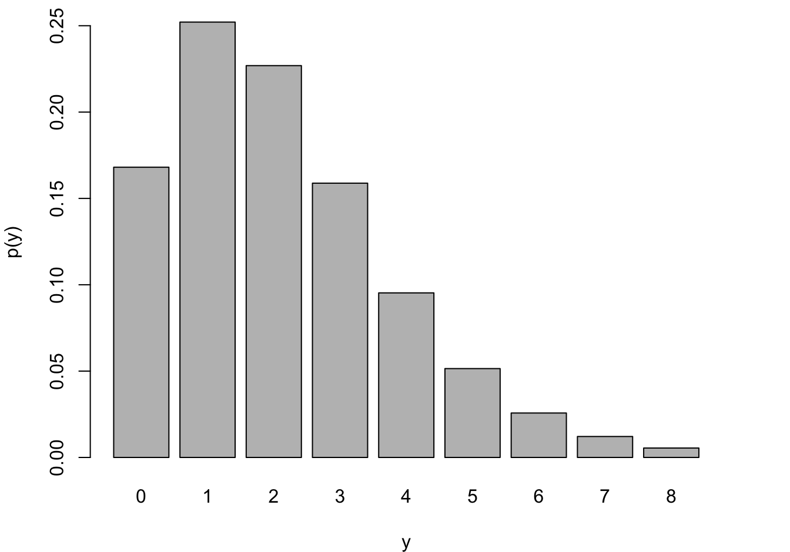
Poisson
A random variable has a Poisson distribution with parameter \(\lambda\) if its mass function is given by
\[ \begin{align*} \Pr(Y=y) &= \frac{e^{-\lambda} \lambda^y} {y!} \quad y=0,1,\cdots\\ &= \exp\{ y \log(\lambda) - \lambda - \log(y!) \} \end{align*} \] From the last expression you see the components in the \(P_{expo}\) family:
- Canonical link: \(\theta = \log(\lambda)\)
- \(b(\theta) = e^\theta\)
- \(b^\prime(\theta) = b^{\prime\prime}(\theta) = e^\theta\)
- \(\text{E}[Y] = \text{Var}[Y] = \lambda\)
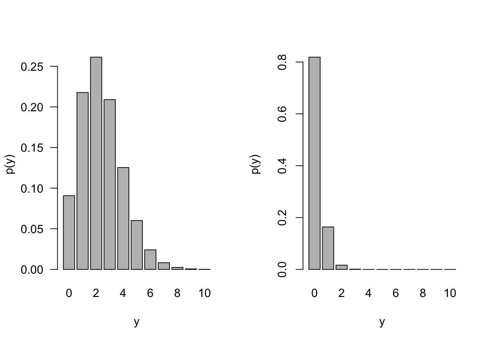
If events occur independently and at a constant rate, the number of events per unit is a Poisson random variable. The Poisson is not directly related to Bernoulli experiment but there is a connection through the Poisson approximation to the Binomial. In a Binomial\((n,\pi)\) process, if \(n \rightarrow \infty\) and \(n\pi \rightarrow \lambda\), then the probabilities can be approximated by those of a Poisson\((\lambda)\) process (Figure 28.7).
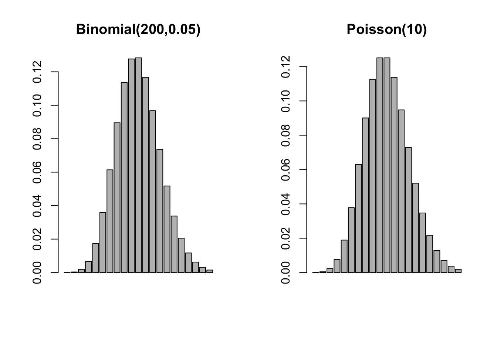
Example: Poisson Approximation to Binomial
If three dice are rolled the probability of three sixes turning up is \(1/6^3 = 1/216 = 0.0046\). If three dice are rolled 200 times, what is the probability of at least one triple six?
This is a \(X \sim\) Binomial(200,1/216) experiment and we are interested in \(1-\Pr(X=0)\) \[ \Pr(\text{at least one triple six}) = 1 - {200 \choose 0} \left ( \frac{1}{216}\right )^0 \left(\frac{215}{216}\right)^{200} = 0.6046 \] The Poisson approximation of this probability relies on \(Y \sim \text{Poisson}(\lambda=200/216)\) \[ \Pr(\text{at least one triple six}) \approx 1 - \frac{(200/216)^0 } {0!} \exp\left\{ -\frac{200}{216} \right \} = 0.6038 \] The calculation is much simpler and accurate to 2 decimal places.
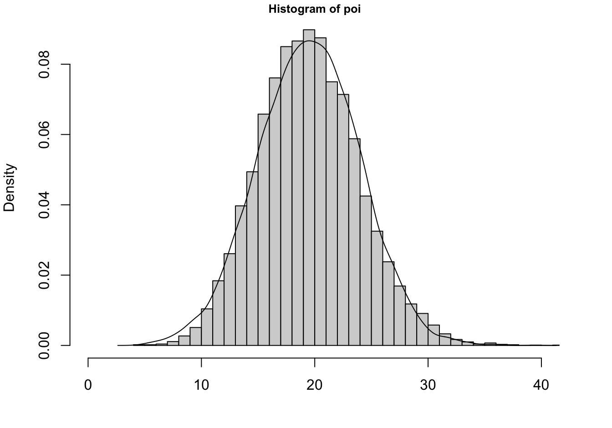
The Poisson can in turn be approximated by a Gaussian distribution. As \(\lambda \rightarrow \infty\), the Poisson\((\lambda)\) p.m.f. approaches the density of a G\((\lambda,\lambda)\) random variable. The approximation holds for \(\lambda > 100\) but is not bad even for \(\lambda > 20\) (Figure 28.8).
{kind=link}
Continuous distributions
Gaussian
The most important continuous distribution in statistics is the Gaussian, denoted G\((\mu,\sigma^2)\). A random variable \(Y\) has a Gaussian distribution if its density function is given by \[ f(y) = \frac{1}{\sqrt{2\pi\sigma^2}}\exp\left\{-\frac{1}{2\sigma^2}(y-\mu)^2 \right \} \quad -\infty < y < \infty \]
The parameters of the G(\(\mu,\sigma^2)\) represent the mean and variance of \(Y\): \[ \text{E}[Y] = \mu \quad \text{Var}[Y] = \sigma^2 \]
The distribution with \(\mu = 0\), \(\sigma^2 = 1\) is called the standard Gaussian distribution.
Tip
The Gaussian distribution is sometimes parameterized in terms of the mean and standard deviation of \(Y\). When using software make sure you know what the quantities represent. For example, you specify the mean and standard deviation with the dnorm, pnorm, qnorm, and rnorm functions in R.
The Gaussian distribution is often referred to as the Normal distribution. We prefer the term Gaussian because there is nothing normal about the Normal distribution. Most attributes are not normally distributed, despite frequent assumptions to the contrary. The density has a classical, symmetric bell shape, centered at \(\mu\) (Figure 28.9).
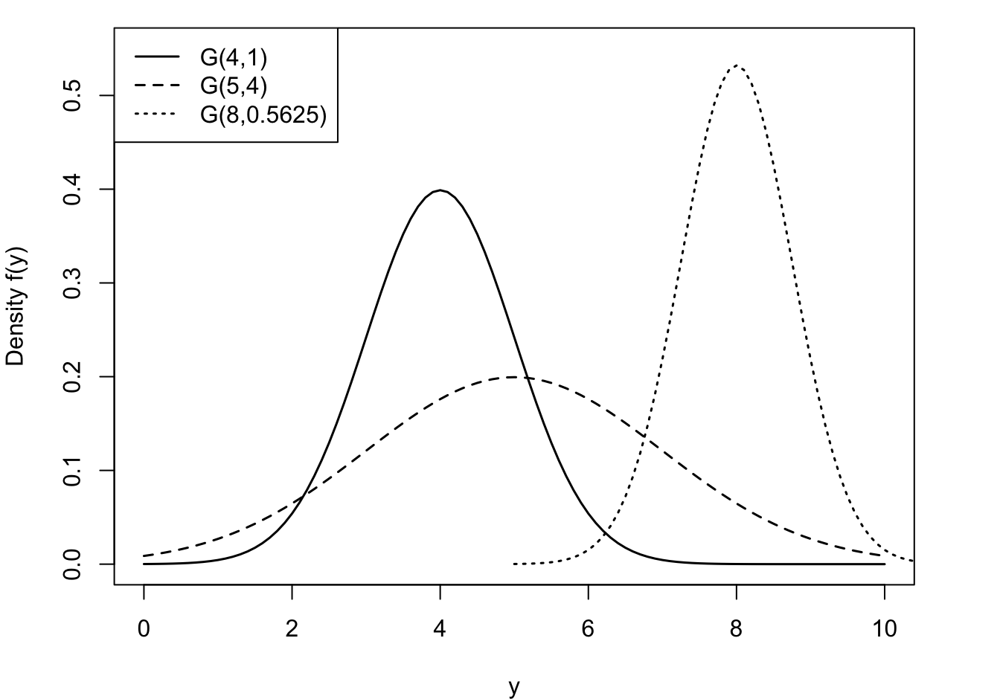
What is normal?
We eschew the use of the term normal to describe the Gaussian distribution for another reason: the connection of the concept of normality and this distribution to eugenics. The Belgian astronomer, statistician and mathematician Adolphe Quetelet (1796–1847) introduced the generalized notion of the normal. He studied the distribution of physical attributes and determined that the normal, the most representative, value of an attribute is its average. Discrepancies above and below the average were considered “errors”. Early applications of the Gaussian distribution were in the study of measurement errors. C.F. Gauss used the distribution to represent errors in the measurement of celestial bodies.
Prior to Quetelet, the view of “norm” and “normality” was associated with carpentry. The carpenter square is also called the norm, and in normal construction everything is at right angles. With Quetelet, the middle of the distribution, the center, became the “new normal.” There is nothing objectionable so far.
However, this view did not sit well with Fancis Galton, who introduced the term eugenics. Galton replaced the term “error” with standard deviation and considered variability within a human population as potential for racial progress (Grue and Heiberg 2006). The bell shape of the normal distribution was not used to focus our attention on the average, as Quetelet did. Galton introduced quartiles to categorize the area under the normal into sections of greater and lesser genetic worth. That is not normal!
The Gaussian has remarkable properties that make it stand out and that make it particularly easy to work with—compared to other distributions. For example,
Linearity. A linear combination of Gaussian random variables is also Gaussian distributed. If \(Y \sim G(\mu,\sigma^2)\), then \(X = aY + b \sim G(a\mu + b, a^2\sigma^2)\). An immediate corollary is that the sample mean from a Gaussian distribution is also Gaussian distributed: if \(Y_i \sim \textit{ iid } G(\mu,\sigma^2)\), then \(\overline{Y} \sim G(\mu,\sigma^2/n)\)
Mean-variance decoupling. The mean and the variance of a Gaussian distribution are not linked. The variance is not a function of the mean, as is the case for other members of the exponential family of distributions.
Correlation and Independence. When two variables are jointly (bi-variate) Gaussian distributed, the absence of a correlation implies the independence of the random variables. This follows from the fact that with a zero covariance the joint distribution factors into the product of the marginal distributions (see Section 3.9)
Sampling Distributions. When drawing random samples from a G(\(\mu,\sigma^2\)), the probability distribution of simple transformations of sufficient statistics are well understood. For example, \[ \frac{\overline{Y}-\mu}{s/\sqrt{n}} \] follows a \(t_{n-1}\) distribution with \(n-1\) degrees of freedom. This forms the basis of hypothesis tests about the mean \(\mu\).
Asymptotic Gaussianity. As sample size increases, the distribution of many estimators and statistics approaches a Gaussian distribution. This is the basis for using hypothesis tests, constructing confidence and prediction intervals, etc. based on a Gaussian distribution in sufficiently large samples.
Maybe most importantly, the Central Limit Theorem tells us that even if we do not sample from a G(\(\mu, \sigma^2\)) distribution, the distribution of the sample mean asymptotically follows a G(\(\mu,\sigma^2/n\)) distribution.
Central Limit Theorem
Let \(Y_{1},\cdots,Y_{n}\) be independent and identically distributed random variables with mean \(\mu\) and variance \(\sigma^{2} < \infty.\) The distribution of
\[\frac{\overline{Y} - \mu}{\sigma/\sqrt{n}}\]
converges to that of a standard Gaussian random variable as \(n \rightarrow \infty\).
In summary, the importance of the Gaussian distribution does not stem from attributes being Gaussian distributed. It follows because statistics such as parameter estimators asymptotically follow a Gaussian distribution. Another interesting property of the Gaussian distribution is its support: \(-\infty < Y < \infty\). Many continuous attributes take on only positive values, length, weight, lifetime, etc. This does not rule out the use of the Gaussian distribution for those attributes, with a sufficiently large mean the probability of negative values is essentially zero. On the contrary, it triggers the question which continuous distributions in \(P_{expo}\) have support \(Y > 0\), or \(0 < Y < 1\) and are possibly candidates
Exponential
The exponential distribution is a useful probability model for modeling continuous lifetimes (Figure 28.10). It is related to Poisson processes. If events occur continuously and independently at a constant rate \(\lambda\), the number of events is a Poisson random variable. The time between the events is an exponential random variable, denoted \(Y \sim\) Expo(\(\lambda\)).
\[p(y) = \lambda e^{- \lambda y},\ \ \ \ y \geq 0\]
\[F(y) = 1 - e^{- \lambda y},\ \ \ y \geq 0\]
\[\text{E}\lbrack Y\rbrack = \frac{1}{\lambda}\ \ \ \ \ \ \text{Var}\lbrack Y\rbrack = \frac{1}{\lambda^{2}}\]
Like the discrete Geometric(\(\pi\)) distribution, the Expo(\(\lambda\)) distribution is forgetful,
\[\Pr{(Y > s + t|Y > t)} = \Pr{(Y > s)}\]
and it turns out that no other continuous function has this memoryless property. This property is easily proven using \(\Pr(Y > y) = 1 - F(y) = e^{- \lambda y}\):
\[\Pr\left( Y > t + s \middle| Y > t \right) = \frac{\Pr{(Y > t + s,Y > t)}}{\Pr{(Y > t)}} = \frac{Pr(Y > t + s)}{Pr(Y > t)} = \frac{e^{- \lambda(t + s)}}{e^{- \lambda t}} = e^{- \lambda s}\]
The memoryless property of the exponential distribution makes it not a good model for human lifetimes. The probability that a 20-year-old will live another 10 years is not the same as the probability that a 75-year-old will live another 10 years. The exponential distribution implies that this would be the case. When modeling earthquakes, it might be reasonable that the probability of an earthquake in the next ten years is the same, regardless of when the last earthquake occurred—the exponential distribution would then be reasonable.
You don’t have to worry about whether other distributions have this memoryless property in applications where lack of memory would not be appropriate. The exponential distribution is defined by this property, it is the only continuous distribution with lack of memory.
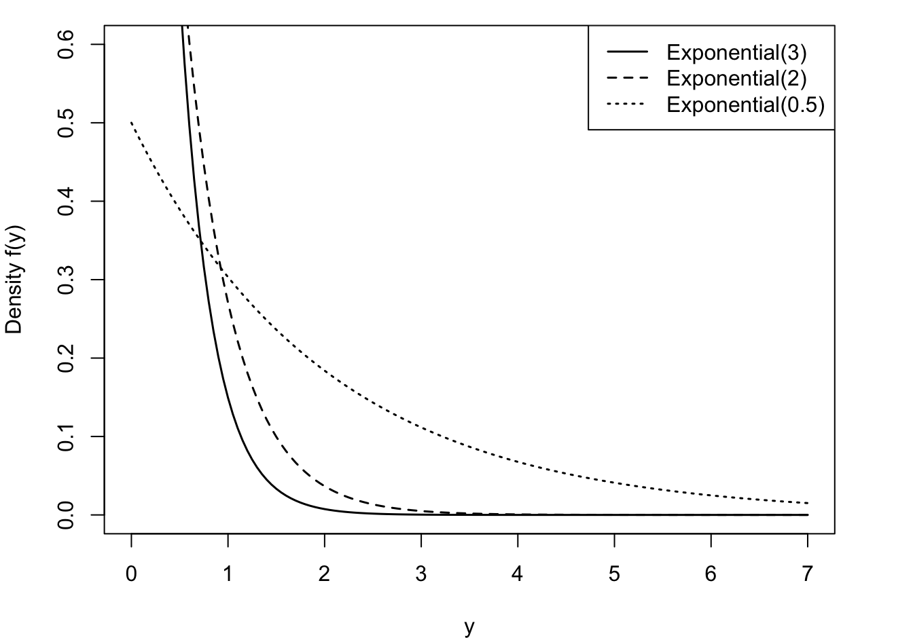
Gamma
The Expo(\(\lambda\)) distribution is a special case of a broader family of distributions, the Gamma(\(\alpha,\beta\)) distribution. A random variable \(Y\) is said to have a Gamma(\(\alpha,\beta\)) distribution if its density function is
\[f(y) = \frac{1}{\beta^{\alpha}\Gamma(\alpha)}y^{\alpha - 1}e^{- y/\beta},\ \ \ \ \ y \geq 0,\ \alpha,\beta > 0\]
The mean and variance of a Gamma(\(\alpha,\beta\)) random variable are given by
\[\text{E}\lbrack Y\rbrack = \alpha\beta\ \ \ \ \ \text{Var}\lbrack Y\rbrack = \alpha\beta^{2}\]
\(\alpha\) is called the shape parameter of the distribution and \(\beta\) is called the scale parameter. Varying \(\alpha\) affects the shape and varying \(\beta\) affects the units of measurement (Figure 28.11). A property of Gamma functions is a constant coefficient of variation (CV). CV is defined as the ratio of the standard deviation to the mean of a distribution. For the Gamma(\(\alpha,\beta\)) family this coefficient is \[ \text{CV} = \frac{\sqrt{\alpha\beta^2}}{\alpha\beta} = \frac{1}{\sqrt{\alpha}} \]
The term \(\Gamma(\alpha)\) in the denominator of the density function is called the Gamma function,
\[\Gamma(\alpha) = \int_{0}^{\infty}{y^{\alpha - 1}e^{- y}}dy\]
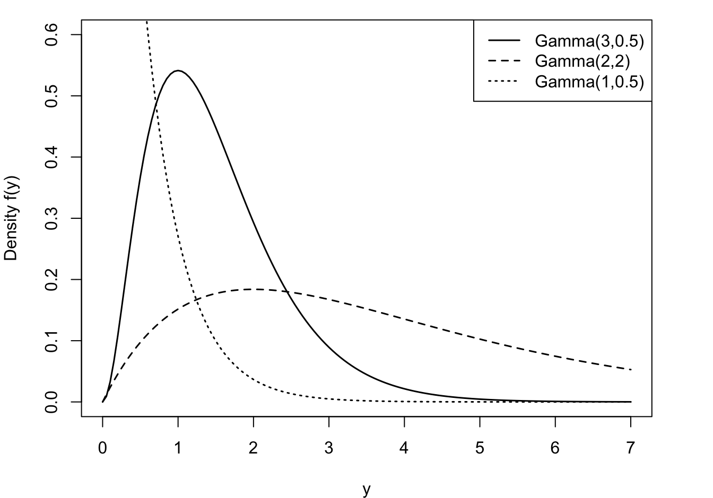
Tip
Fun fact: if \(\alpha\) is an integer, \(\Gamma(\alpha) = (\alpha - 1)!\)
The exponential random variable introduced earlier is a special case of the Gamma family, the Expo(\(1/\beta\)) is the same as the Gamma(1,\(\beta\)).
Another special case of the gamma-type random variables is the Chi-square random variable. A random variable \(Y\) is said to have a Chi-squared distribution with \(\nu\) degrees of freedom, denoted \(\chi_{\nu}^{2}\), if \(Y\) is a Gamma(\(\frac{\nu}{2},2\)) random variable.
Beta
A random variable has a Beta distribution with parameters \(\alpha\) and \(\beta\), denoted \(Y \sim \text{Beta}(\alpha,\beta)\), if its density function is given by \[ f(y) = \frac{\Gamma(\alpha+\beta)}{\Gamma(\alpha)\Gamma(\beta)}\, y^{\alpha-1}\,(1-y)^{\beta-1}\quad 0 < y < 1 \] The family of beta distributions takes on varied shapes as seen in Figure 28.12.
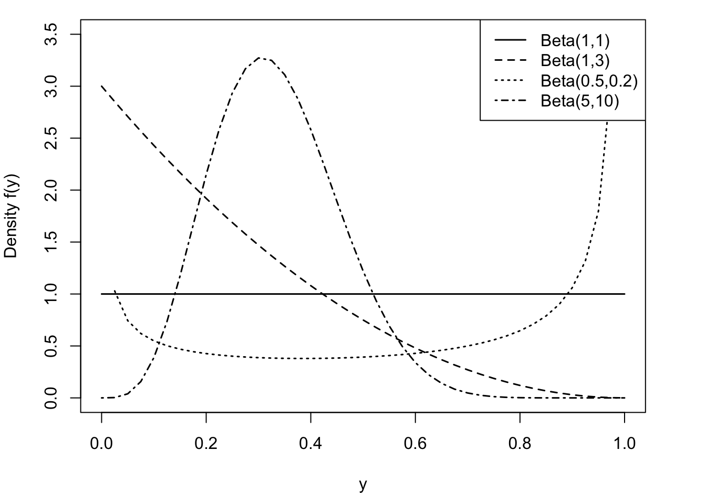
The ratio of Gamma functions is known as the Beta function and the density can also be written as \(f(y) = y^{\alpha-1}(1-y)^{(\beta-1)} / B(\alpha,\beta)\) where \(B(\alpha,\beta) = \Gamma(\alpha)\Gamma(\beta)/\Gamma(\alpha+\beta)\).
The mean of a \(\text{Beta}(\alpha,\beta])\) random variable is \[\text{E}[Y] = \frac{\alpha}{\alpha+\beta} \] and the variance is \[ \text{Var}[Y] = \frac{\alpha\beta}{(\alpha+\beta)^2 (\alpha+\beta+1)} = \text{E}[Y]\frac{\beta}{(\alpha+\beta)(\alpha+\beta+1)} \]
The support of a Beta random variable is continuous on \([0,1]\), which makes it an attractive candidate for modeling proportions, for example, the proportion of time a vehicle is in maintenance or the proportion of disposable income spent on rent or the market share of a company.
The Beta distribution can also be used for random variables that are defined on a different scale, \(a < Y < b\), by transforming to the [0,1] scale: \(Y^* = (Y-a)/(b-a)\).
The \(\text{Beta}(1,1)\) is a continuous uniform random variable on [0,1].
Since \(Y\) is continuous, we can define the support of the Beta random variable as \(0 \le y \le 1\) or as \(0 < y < 1\). The probability that the continuous random variable takes on exactly the value 0 or 1 is zero. However, in practice you can observe proportions at the extreme of the support; the proportion of income spent on rent by a homeowner is zero. That causes difficulties evaluating the log likelihood function at the boundaries of the support.
28.3 Link Functions
The link function in a GLM plays two important roles. It is the transformation of the mean to a scale where the input effects are linear. Because of this transformation, we can still work with linear structures \(\textbf{x}^\prime\boldsymbol{\beta}\) and do not have to resort to general nonlinear transformations. The linearity of the predictor simplifies parameter estimation, prediction, and hypothesis testing.
The second responsibility of the link function is to ensure that the model predictions are valid. The coefficients in the linear predictor can take on any value on the real line, \(-\infty < \beta_j < \infty\). The predicted means have to comply with the support restrictions of the target variable. For example, the mean of a Bernoulli(\(\pi\)) random variable is the probability \(0 \le \pi \le 1\), for the Poisson the mean is \(\lambda > 0\). The inverse link function needs to ensure that \(g^{-1}(\eta)\) is a valid quantity for all possible values of \(\eta\) (Figure 28.13).
{kind=link}
Important
The link function is a transformation of the mean, it is not a transformation of the data. Modeling \(\log(\mu) = \textbf{x}^\prime\boldsymbol{\beta}\) is very different from log-transforming the data and assuming a linear model holds on the transformed scale: \(\log(Y) = \textbf{x}^\prime\boldsymbol{\beta}+ \epsilon\). The link function is a transformation of a constant, \(\log(Y)\) is the transformation of a random variable. Choosing a different link function does not alter the essential distributional properties of the target variable—a Poisson remains a Poisson, for example. Choosing a different transformation of the target variable changes the distributional properties. If \(Y \sim \text{Poisson}(\lambda)\), neither \(log(Y)\) nor \(\sqrt{Y}\) is Poisson distributed.
Table 28.1 lists common link functions for important members of the exponential family. In most cases the canonical link is a good place to start. However, for the Gamma distribution, the reciprocal link is not adequate, although it is the natural link. Since the mean of a Gamma random variable is positive, choosing the reciprocal link does not guarantee that \[ g^{-1}(\eta) = \frac{1}{\eta} > 0 \] It is common to choose the log link instead in Gamma regression models. Similar for the Inverse Gaussian distribution, where the inverse canonical link is the square root function and does not permit negative values for \(\eta\). The Gaussian distribution shows how special it is one more time: it is the only distribution for which the canoncial link is the identity function: there is no transformation of the mean, the input effects are linear on the scale of the data.
| Distribution | Link Function | Name | Canonical |
|---|---|---|---|
| Bernoulli | \(\text{logit}(\mu) = \log\left (\frac{\mu}{1-\mu}\right )\) | Logit | Yes |
| \(\Phi^{-1}(\mu)\) | Probit | ||
| \(\log(-\log(\mu))\) | Log-log | ||
| \(\log(-\log(1-\mu))\) | Complementary Log-log | ||
| Binomial | Same as Bernoulli | ||
| Negative Binomial | \(\log(\mu)\) | Log | Yes |
| Poisson | \(\log(\mu)\) | Log | Yes |
| Gaussian | \(\mu = \eta\) | Identity | Yes |
| Gamma | \(\mu^{-1}\) | Reciprocal | Yes |
| \(\log(\mu)\) | Log | ||
| Inverse Gaussian | \(\mu^{-2}\) | Reciprocal squared | Yes |
| \(\log(\mu)\) | Log | ||
| Beta | \(\text{logit}(\mu)= \log\left (\frac{\mu}{1-\mu}\right )\) | Logit | Yes |
Note
You can choose any link function that satisfies the properties stated above. The function must be invertible, however, so that we can switch back and forth between the scale of the mean and the scale of the linear predictor.
28.4 Parameter Estimation
Maximum Likelihood
The parameters of a generalized linear model are the coefficients in the mean function, \(\boldsymbol{\beta}\), and, where present, the scale parameter \(\psi\). The standard (frequentist) approach is to estimate the parameters by maximum likelihood. This is reasonable and straightforward because the distribution of the data is specified and the observations are assumed independent. The log-likelihood of the data is then simply the sum of the log-likelihoods for the observations: \[
\ell(\boldsymbol{\mu},\psi;\textbf{y}) = \sum_{i=1}^n \left(y_i\theta(\mu_i) - b(\theta(\mu_i)))/\psi + c(y_i,\psi)\right)
\] To maximize this log likelihood function with respect to \(\beta_k\) we can apply the chain rule of calculus: \[
\frac{\partial \ell(\mu,\psi;\textbf{y})}{\partial \beta_k} = \sum_{i=1}^n \frac{\partial \ell(\mu_i,\psi;y_i)}{\partial \theta(\mu_i)}
\frac{\partial \theta(\mu_i)}{\partial \mu_i}
\frac{\partial \mu_i}{\partial \eta_i}
\frac{\partial \eta_i}{\partial \beta_k}
\] Some manipulations lead to the following expression: \[
\frac{\partial \ell(\mu,\psi;\textbf{y})}{\partial \beta_k} = \sum_{i=1}^n \frac{y_i-\mu_i}{\text{Var}[Y_i]}\frac{\mu_i}{\eta_i}x_k
\] This expression applies whether the link function is canonical or not. When you collect the derivatives for all parameters, finding the maximum likelihood estimates is equivalent to solving
\[
\textbf{F}^\prime\textbf{V}^{-1}(\textbf{y}-\boldsymbol{\mu}) = \textbf{0}
\] where \(\textbf{F}\) is the \((n \times p+1)\) matrix of the first derivatives of the mean with respect to the \(\beta\)s: \(\textbf{F}\) has typical element \([\partial \mu/\partial_\beta]_{ij}\). \(\textbf{V}\) is a diagonal matrix that contains the variances of the targets on the diagonal.
If \(\textbf{V}\) were known, this is a weighted least squares problem. Because \(\textbf{V}\) depends on \(\boldsymbol{\mu}\) in a typical GLM, the ML estimates are found by an iterative procedure, called iteratively reweighted least squares (IRLS).
Iteratively Reweighted Least Squares (IRLS)
The IRLS algorithm can be used to find the maximum likelihood estimates of \(\boldsymbol{\beta}\). To motivate the algorithm we start by a linear approximation (a first-order Taylor series) of the linked observations about an estimate of the mean: \[ \begin{align*} g(y) &= g(\widehat{\mu}) + (y-\widehat{\mu})\left[ \frac{\partial g(y)}{\partial y}\right]_{\vert_{\widehat{\mu}}} \\ &= g(\widehat{\mu}) + (y-\widehat{\mu})\left[\frac{\partial \eta}{\partial \mu} \right]_{\vert_{\widehat{\mu}}} \\ &= \widehat{\eta} + (y-\widehat{\mu})\left[\frac{\partial \eta}{\partial \mu} \right]_{\vert_{\widehat{\mu}}} \\ &= z \end{align*} \tag{28.2}\]
\(z\) is called an adjusted dependent variable or a working response variable or a pseudo-response. The final expression in Equation 28.2 can be viewed as a linear model with response variable \(z\), systematic part \(\widehat{\eta} = \textbf{x}^\prime\widehat{\boldsymbol{\beta}}\) and error term \((y-\mu)[\partial \eta/\partial \mu]\). The variance of this error term is \[ \text{Var}[z] = \left[\frac{\partial \eta}{\partial \mu}\right]^2 \text{Var}[Y] \]
The iterative procedure is as follows: given an initial value of \(z\), which requires an initial estimate of \(\mu\), fit a weighted linear model with inputs \(\textbf{x}= [x_1,\cdots,x_p]^\prime\) and weights given by the inverse of \(\text{Var}[z]\). The solution to the weighted linear model is an updated parameter vector \(\boldsymbol{\beta}\). Re-calculate \(z\) and the weights and repeat the weighted linear regression fit. Continue until the relative change in the parameter estimates, the log likelihood function, the deviance, or some other criterion is negligible. McCullagh and Nelder Frs (1989) show that this procedure converges to the maximum likelihood estimates.
A nice property of the IRLS algorithm is the ease of finding starting values. The initial value of \(z\) that kicks off the iterations does not necessarily require an estimate of \(\boldsymbol{\beta}\). If the link function can be evaluated at the data points (maybe after slight adjustments such as moving data points away from boundary values), then one can start the iterations using the observed data as the initial estimate of \(\mu\). For binary data, for example, initial adjustments to the data values such as \[ y^* = \frac{y+c}{y+2c} \] can be used to avoid boundary problems. Another technique to get the iterations off the ground is to assume initially that \(\boldsymbol{\beta}= \textbf{0}\).
28.5 Example: Gamma Regression
The Data, Real Estate Values in Albemarle County, Virginia
This example is based on this excellent tutorial at the University of Virginia.
The data represent real estate information from Albemarle County, Virginia. Of interest is modeling the total value of a home (totalvalue) as a function of predictors such as finished square feet, number of full bathrooms, lot size, etc.
library(duckdb)
con <- dbConnect(duckdb(),dbdir = "ads.ddb",read_only=TRUE)
homes <- dbGetQuery(con, "SELECT * FROM AlbemarleHomes")
dbDisconnect(con)
str(homes)'data.frame': 3025 obs. of 16 variables:
$ column00 : num 1 2 3 4 5 6 7 8 9 10 ...
$ yearbuilt : chr "1754" "1968" "1754" "1934" ...
$ finsqft : num 1254 1192 881 480 720 ...
$ cooling : chr "No Central Air" "No Central Air" "No Central Air" "No Central Air" ...
$ bedroom : num 1 3 2 0 2 3 2 3 2 0 ...
$ fullbath : num 1 1 1 0 1 1 1 1 1 0 ...
$ halfbath : chr "0" "0" "0" "0" ...
$ lotsize : num 4.93 1.09 195.93 10 1 ...
$ totalvalue : num 124300 109200 141600 69200 139700 ...
$ esdistrict : chr "Brownsville" "Scottsville" "Stony Point" "Crozet" ...
$ msdistrict : chr "Henley" "Walton" "Sutherland" "Henley" ...
$ hsdistrict : chr "Western Albemarle" "Monticello" "Albemarle" "Western Albemarle" ...
$ censustract: num 111 113 104 101 102 ...
$ age : num 265 51 265 85 56 265 87 59 69 265 ...
$ condition : chr "Substandard" "Substandard" "Substandard" "Substandard" ...
$ fp : num 0 0 0 0 0 0 0 1 0 0 ...Computing the coefficient of variation within ranges of finsqft shows that the CV is pretty constant while the variability of home values increases with the square footage of the home. Increasing variability with increasing size is a common phenomenon for many data, biological or otherwise. If the increase in variability–as measured by the standard deviation–is proportional to the mean, the data exhibit a constant coefficient of variation, a property of the Gamma distribution.
library(dplyr)
finsqft_cut <- cut(x=homes$finsqft,
breaks = c(0, 1000, 2000, 3000, 4000, 5000, 8000))
plot(finsqft_cut,homes$totalvalue,
ylab="Total Value",
xlab="Finished Square Footage",
las=1,
cex.axis=0.8)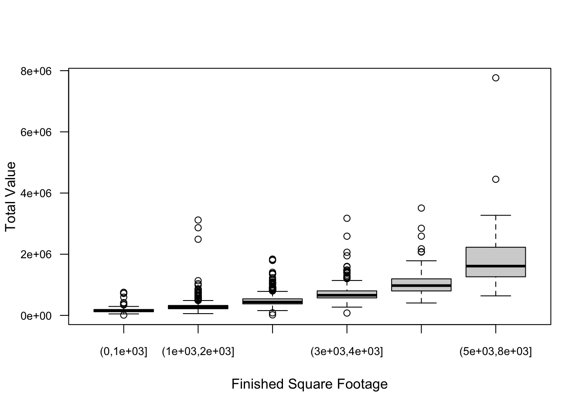
homes %>% mutate(sqft_cut = finsqft_cut) %>%
group_by(sqft_cut) %>%
summarize(count=n(), mean=mean(totalvalue), std=sd(totalvalue)) %>%
mutate(CV = std/mean)# A tibble: 6 × 5
sqft_cut count mean std CV
<fct> <int> <dbl> <dbl> <dbl>
1 (0,1e+03] 193 168621. 99722. 0.591
2 (1e+03,2e+03] 1523 285751. 153949. 0.539
3 (2e+03,3e+03] 901 479938. 184596. 0.385
4 (3e+03,4e+03] 272 732660. 316818. 0.432
5 (4e+03,5e+03] 82 1088504. 497282. 0.457
6 (5e+03,8e+03] 54 1905324. 1112306. 0.584par(mfrow=c(1,2))
hist(homes$totalvalue,
breaks=30,
cex.main=0.9,
main="Distribution of Home Values",
xlab="value")
hist(log(homes$totalvalue),
breaks=30,
cex.main=0.9,
main="Distribution of Log Home Values",
xlab="log(value)" )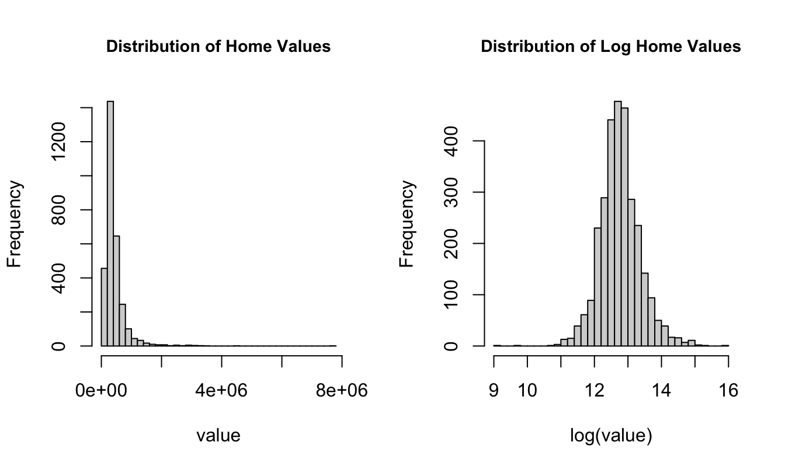
Fitting a Gamma Regression Model
We fit the Gamma GLM with the glm function in R. The default link for family=Gamma is the canonical link, which is the inverse. This is not a good link function to model positive target values, since there is no guarantee that the inverse link satisfies the range restriction for the mean of the target variable. We choose the log link instead. The following statements fit a regression model of the form \[
\begin{align*}
\log \text{E}[\text{Total Value}] &= \beta_0 + \beta_1 \, \text{finished sq.ft} \\
\text{E}[\text{Total Value}] &= \exp\{\beta_0 + \beta_1 \, \text{finished sq.ft}\}
\end{align*}
\] assuming that totalvalue follows a Gamma distribution.
gam_reg <- glm(totalvalue ~ finsqft,
data=homes,
family=Gamma(link="log"))
summary(gam_reg)
Call:
glm(formula = totalvalue ~ finsqft, family = Gamma(link = "log"),
data = homes)
Coefficients:
Estimate Std. Error t value Pr(>|t|)
(Intercept) 1.178e+01 1.986e-02 593.18 <2e-16 ***
finsqft 5.081e-04 8.753e-06 58.04 <2e-16 ***
---
Signif. codes: 0 '***' 0.001 '**' 0.01 '*' 0.05 '.' 0.1 ' ' 1
(Dispersion parameter for Gamma family taken to be 0.2122692)
Null deviance: 1206.00 on 3024 degrees of freedom
Residual deviance: 378.25 on 3023 degrees of freedom
AIC: 79593
Number of Fisher Scoring iterations: 4The model converges in 4 iterations and the maximum likelihood estimates of the coefficients are \(\widehat{\beta}_0\) = 11.7823 and \(\widehat{\beta}_1\) = 5.1^{-4}.
The addition of the single input variable finsqft reduces the deviance dramatically, compared to a null model; from 1205.995 to 378.25. The finsqft coefficient is highly significant.
Suppose we wish to predict the value of a home with 2,500 finished square feet.
First, let’s do it the hard way, using the coefficients from the output:
round(gam_reg$coefficients,5)(Intercept) finsqft
11.78227 0.00051 pred_2500 <- gam_reg$coefficients[1] + 2500 * gam_reg$coefficients[2]
cat("Linear predictor for 2,500 finished square feet: ", pred_2500)Linear predictor for 2,500 finished square feet: 13.05243cat("Predicted home value with 2,400 finished square feet:", exp(pred_2500))Predicted home value with 2,400 finished square feet: 466225.8The linear combination \(\widehat{\beta}_0 + \widehat{\beta}_1 \times 2500\) yields the linear predictor, 13.0524. This value is on the scale of the link function. To obtain the estimated total home value, we have to plug the estimated linear predictor into the inverse link function. The predicted total home value is 4.6622585^{5}. Especially when working with log links, analysts sometimes forget to apply the inverse link function. When the linear predictor is a positive number, it is easily mistaken for the prediction of the mean.
You can also use the predict function to obtain the predictions. The type= option determines whether the predicted values are calculated for the linear predictor (type="link") or for the mean response (type="response").
predict(gam_reg, newdata=data.frame(finsqft=2500),type="link") 1
13.05243 p <- predict(gam_reg, newdata=data.frame(finsqft=2500), type="response")
cat("Predicted home value for 2,500 finished square feet: ", p)Predicted home value for 2,500 finished square feet: 466225.8Likelihood Ratio Test
Is our model sufficiently complex to capture the variability in total home values? We can compare it to more complex models with a likelihood ratio test, provided the models are nested. The following statements add four input variables to our basic model. The model summary confirms that their partial tests (adding each variable in the presence of the others) are significant.
gam_reg_full <- glm(totalvalue ~ finsqft + cooling + lotsize + fullbath + lotsize,
data=homes,
family=Gamma(link="log"))
summary(gam_reg_full)
Call:
glm(formula = totalvalue ~ finsqft + cooling + lotsize + fullbath +
lotsize, family = Gamma(link = "log"), data = homes)
Coefficients:
Estimate Std. Error t value Pr(>|t|)
(Intercept) 1.171e+01 2.137e-02 547.703 <2e-16 ***
finsqft 3.868e-04 1.032e-05 37.465 <2e-16 ***
coolingNo Central Air -2.117e-01 2.339e-02 -9.048 <2e-16 ***
lotsize 7.411e-03 3.748e-04 19.773 <2e-16 ***
fullbath 1.310e-01 1.082e-02 12.104 <2e-16 ***
---
Signif. codes: 0 '***' 0.001 '**' 0.01 '*' 0.05 '.' 0.1 ' ' 1
(Dispersion parameter for Gamma family taken to be 0.1475242)
Null deviance: 1206.00 on 3024 degrees of freedom
Residual deviance: 287.37 on 3020 degrees of freedom
AIC: 78753
Number of Fisher Scoring iterations: 9We can test the simultaneous addition of the four variables with a single LRT.
library(lmtest)
lrtest(gam_reg,gam_reg_full)Likelihood ratio test
Model 1: totalvalue ~ finsqft
Model 2: totalvalue ~ finsqft + cooling + lotsize + fullbath + lotsize
#Df LogLik Df Chisq Pr(>Chisq)
1 3 -39794
2 6 -39370 3 846.39 < 2.2e-16 ***
---
Signif. codes: 0 '***' 0.001 '**' 0.01 '*' 0.05 '.' 0.1 ' ' 1
Caution
The lrtest function in the lmtest package constructs LRTs based on the result returned from calls to logLik for each model. If the result returned from logLik is not a true log likelihood, the results of lrtest are not meaningful. For example, you can request logLik for a model fit by lm, which performs least-squares estimation. There is no distributional assumption in lm, hence there is no likelihood or log likelihood function. The logLik function itself computes the log likelihood indirectly, for example, based on Akaike’s Information Criterion (AIC). For likelihood-based estimation, AIC is defined as \[
\text{AIC} = -2\log \ell + 2 k
\] where \(k\) is the total number of model parameters, including scale and covariance parameters. Back-calculating \(\log \ell\) based on AIC is implicitly making the distributional assumption that underpins the computation of AIC for a particular class of models, even if the estimation is free of a distributional assumption.
28.6 Example: Beta Regression
The typical R functions to fit generalized linear models or generalized additive models are glm and gam::gam. Unfortunately, neither of them support beta-distributed data, although the Beta distribution is in the two-parameter exponential family. Recall from Section 28.2.3.2.4 that a Beta random variable is continuous on \([0,1]\) and a plausible model for ratios. Also, every random variable with finite support \([a,b]\) can be normalized to lie in the \([0,1]\) interval by the transformation \[
x_n = \frac{x - a}{b - a}
\]
The parameterization of the Beta distribution in Section 28.2.3.2.4 is not the most convenient to fit a generalized linear model. As shown there, \[ f(y) = \frac{\Gamma(\alpha+\beta)}{\Gamma(\alpha)\Gamma(\beta)}\, y^{\alpha-1}\,(1-y)^{\beta-1}\quad 0 < y < 1 \]
and \(Y\) has mean \(\alpha/(\alpha + \beta)\). Ferrari and Cribari-Neto (2004) proposed a parameterization in terms of \(\mu=\alpha/(\alpha + \beta)\) and a scale parameter \(\phi= \alpha + \beta\): \[ f(y) = \frac{\Gamma(\phi)}{\Gamma(\mu\phi)\Gamma((1-\mu)\phi)}\, y^{\mu\phi-1}(1-y)^{(1-\mu)\phi-1} \]
In this Beta\((\mu,\phi)\) parameterization, \(\text{E}[Y] = \mu\) and \(\text{Var}[Y] = \mu(1-\mu)/(1+\phi)\). The variance of the random variable is inversely related to the magnitude of \(\phi\), that is why it is called a precision parameter (\(1/\phi\) is a dispersion parameter). The mean–variance relationship should look familiar, it is akin to that of the Bernoulli distribution, except for the involvement of the precision parameter. This is not too surprising as both Bernoulli and Beta random variables have means that range from 0 to 1. By the same token, the most common link function in Beta regressions is the logit link.
You can fit beta regression models in the Ferrari and Cribari-Neto (2004) parameterization in R with the betareg package and with the glam package. The glam package can also handle generalized additive models (Chapter 29) and grew out of a previous project in this course.
We start with the gasoline yield data by Prater (1956) that is supplied by the betareg package. The target variable is the proportion of crude oil converted to gasoline after distillation and fractionation. Potential input variables to the regression include the gravity and vapor pressure of the crude oil, the temperature at with 10% of the crude oil has vaporized, the temperature at which all gasoline has vaporized, and the batch number. The following code fits the model \[
\begin{align*}
Y &\sim \text{Beta}(\mu,\phi) \\
\mu &= \frac{1}{1+\exp\{-\eta\}} \\
\eta &= \beta_0 + \beta_1\text{gravity} + \beta_2\text{pressure} + \beta_3\text{temp10} + \beta_4\text{temp} \\
\end{align*}
\]
library(betareg)
data("GasolineYield", package = "betareg")
beta_glm1 <- betareg(yield ~ gravity + pressure + temp10 + temp,
data=GasolineYield)
s <- summary(beta_glm1)
s
Call:
betareg(formula = yield ~ gravity + pressure + temp10 + temp, data = GasolineYield)
Quantile residuals:
Min 1Q Median 3Q Max
-1.9010 -0.6829 -0.0385 0.5531 2.1314
Coefficients (mean model with logit link):
Estimate Std. Error z value Pr(>|z|)
(Intercept) -2.6949422 0.7625693 -3.534 0.000409 ***
gravity 0.0045412 0.0071419 0.636 0.524871
pressure 0.0304135 0.0281007 1.082 0.279117
temp10 -0.0110449 0.0022640 -4.879 1.07e-06 ***
temp 0.0105650 0.0005154 20.499 < 2e-16 ***
Phi coefficients (precision model with identity link):
Estimate Std. Error z value Pr(>|z|)
(phi) 248.24 62.02 4.003 6.26e-05 ***
---
Signif. codes: 0 '***' 0.001 '**' 0.01 '*' 0.05 '.' 0.1 ' ' 1
Type of estimator: ML (maximum likelihood)
Log-likelihood: 75.68 on 6 Df
Pseudo R-squared: 0.9398
Number of iterations: 144 (BFGS) + 5 (Fisher scoring) The maximum likelihood estimates of the model coefficients are \(\widehat{\beta}_0 =\) -2.6949, \(\widehat{\beta}_1 =\) 0.0045, and so forth. The estimate of the precision parameter is \(\widehat{\phi} =\) 248.2419.
Figure 28.14 displays the observed and fitted yield values against the temperature at which gasoline has vaporized (temp).
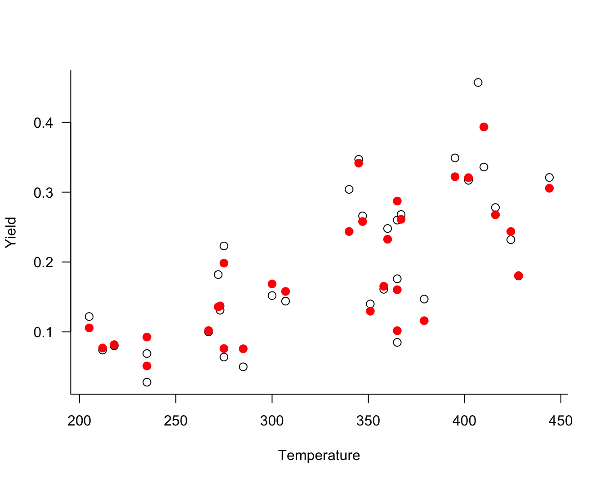
To fit this model with the GLAM package, you would use
library(glam)
Y <- GasolineYield$yield
X <- cbind(GasolineYield$gravity,
GasolineYield$pressure,
GasolineYield$temp10,
GasolineYield$temp)
beta_glm2 <- glam(X, Y, model="linear", family="beta")28.7 Overdispersion
Overdispersion is the condition where the data appear more variable than is permissible under a reference model. If overdispersion is present some aspect of the model is not correct. It is important to address the specific shortcoming that induces the overdispersion. Causes can include one or more of the following
- important input variables are missing from the model
- the data are autocorrelated, for example in time series or longitudinal data
- the data do not follow the assumed probability model
- the data were generated by a mixture of random processes rather than a single mechanism
Overdispersion is addressed by turning the appropriate knob. If overdispersion is not addressed, the precision of the fitted model is overstated: standard error estimates are too small, confidence and prediction intervals are too narrow, \(p\)-values are too small.
Generalized linear models are notorious for overdispersion issues, because the variability of the data is partially or completely controlled by the mean function. With Poisson data, for example, the variance equals the mean of the distribution. By specifying a GLM for the mean function, we explicitly specify a model for the variance. Two-parameter exponential family models such as the Gamma, and Beta distribution have a scale parameter but there is still a linkage between the mean and the variance. The only distribution where the mean of \(Y\) is completely decoupled from the variance is the Gaussian distribution. In other words, Gaussian data can never be overdispersed because the reference model can combine any value for the mean with any value for the variance.
The following example shows how incorrectly modeling count data can induce overdispersion.
Example: Poppy Counts in RCBD
The following data from (Mead, Curnow, and Hasted 1993, 144), are from a randomized complete block design (RCBD) with 4 blocks and 6 experimental treatments. The output variable was the number of poppies on the experimental unit.
| Treatment | Block 1 | Block 2 | Block 3 | Block 4 |
|---|---|---|---|---|
| A | 538 | 422 | 377 | 315 |
| B | 438 | 442 | 319 | 380 |
| C | 77 | 61 | 157 | 52 |
| D | 115 | 57 | 100 | 45 |
| E | 17 | 31 | 87 | 16 |
| F | 18 | 26 | 77 | 20 |
There appears to be a strong treatment effect, the counts are generally higher for treatments A and B than for E and F. There also appears to be a block effect. Scanning the columns in the table, block 4 seems to have systematically smaller counts than the other blocks.
In a randomized complete block design with \(t\) treatments and \(b\) blocks, there are \(t\times b\) experimental units. A block of units is characterized by greater similarity of the experimental units within the block than between the blocks. The \(t\) treatments are then randomly assigned to the experimental units within each block (Figure 28.15). This design captures systematic differences between the blocks and the randomization of treatments within a block balances out the unaccounted effects within the blocks.
{kind=link}
library("duckdb")
con <- dbConnect(duckdb(),dbdir = "ads.ddb",read_only=TRUE)
poppies <- dbGetQuery(con, "SELECT * FROM poppies")
dbDisconnect(con)
poppies$block <- as.factor(poppies$block)
poppies$block <- relevel(poppies$block,"4")
poppies$tx <- relevel(as.factor(poppies$treatment),"F")Suppose we analyze the data as a Poisson model with a treatment factor but leave the block effects out of the model. This is clearly not the correct model as the mean function does not reflect the experimental design.
poi_tx <- glm(count ~ tx, data=poppies, family=poisson)
summary(poi_tx)
Call:
glm(formula = count ~ tx, family = poisson, data = poppies)
Coefficients:
Estimate Std. Error z value Pr(>|z|)
(Intercept) 3.56247 0.08422 42.302 < 2e-16 ***
txA 2.46098 0.08774 28.050 < 2e-16 ***
txB 2.41579 0.08789 27.485 < 2e-16 ***
txC 0.90056 0.09987 9.017 < 2e-16 ***
txD 0.81014 0.10123 8.003 1.21e-15 ***
txE 0.06852 0.11711 0.585 0.558
---
Signif. codes: 0 '***' 0.001 '**' 0.01 '*' 0.05 '.' 0.1 ' ' 1
(Dispersion parameter for poisson family taken to be 1)
Null deviance: 3868.48 on 23 degrees of freedom
Residual deviance: 340.89 on 18 degrees of freedom
AIC: 506.63
Number of Fisher Scoring iterations: 5Treatment F was set as the reference level, so the coefficients in the glm output measure differences to that treatment. All treatments are significantly different from F, except for treatment E.
The large residual deviance relative to its degrees of freedom is troubling, however. In a well-specified model, their ratio should be close to 1. Instead, the ratio is almost 19.
poi_tx$deviance / poi_tx$df.residual[1] 18.93844The model is highly overdispersed. Without block effects, the model is misspecified.
poi_rcbd <- glm(count ~ block + tx, data=poppies, family=poisson)
summary(poi_rcbd)
Call:
glm(formula = count ~ block + tx, family = poisson, data = poppies)
Coefficients:
Estimate Std. Error z value Pr(>|z|)
(Intercept) 3.32803 0.08978 37.067 < 2e-16 ***
block1 0.37356 0.04516 8.273 < 2e-16 ***
block2 0.22700 0.04659 4.873 1.10e-06 ***
block3 0.29939 0.04586 6.529 6.64e-11 ***
txA 2.46098 0.08774 28.050 < 2e-16 ***
txB 2.41579 0.08789 27.485 < 2e-16 ***
txC 0.90056 0.09987 9.017 < 2e-16 ***
txD 0.81014 0.10123 8.003 1.21e-15 ***
txE 0.06852 0.11711 0.585 0.558
---
Signif. codes: 0 '***' 0.001 '**' 0.01 '*' 0.05 '.' 0.1 ' ' 1
(Dispersion parameter for poisson family taken to be 1)
Null deviance: 3868.5 on 23 degrees of freedom
Residual deviance: 264.7 on 15 degrees of freedom
AIC: 436.44
Number of Fisher Scoring iterations: 5The RCBD Poisson model improves the overdispersion but not by much:
poi_rcbd$deviance / poi_rcbd$df.residual[1] 17.6466The mean function is now correctly specified; the explanation for the overdispersion is that the data are not Poisson distributed.
Scaled Analysis
A “quick fix” of the overdispersion problem is to introduce a scaling factor that adjusts the variability of the data somehow. In the presence of overdispersion the standard errors reported by software are too small. As a consequence, \(p\)-values are too small, prediction and confidence intervals are too narrow.
The quick fix is to adjust the variance-covariance matrix of the model coefficients by the sum of the squared Pearson residuals divided by the residual degrees of freedom. The Pearson residual in a generalized linear model is \[ \frac{y_i - \widehat{\mu}_i}{\sqrt{\widehat{\text{Var}}[y_i]}} \] and the adjustment factor is \[ \frac{1}{df_{\text{res}}} \sum_{i=1}^n \frac{(y_i - \widehat{\mu}_i)^2}{\widehat{\text{Var}}[y_i]} \]
This is sometimes called a quasi-glm analysis. The results of the quasi-poisson analysis for the poppies experiment follows.
Example: Quasi-Poisson Model for Poppy Counts in RCBD
poi_qp <- glm(count ~ block + tx, data=poppies,
family=quasipoisson)The coefficient estimates are identical to those in the Poisson model. The standard errors of the coefficients are increased by a constant factor
s <- summary(poi_rcbd)
s_q <- summary(poi_qp)
s_q$coefficients[,2] / s$coefficients[,2](Intercept) block1 block2 block3 txA txB
4.338883 4.338883 4.338883 4.338883 4.338883 4.338883
txC txD txE
4.338883 4.338883 4.338883 The factor scaling the standard errors is the square root of the sum of the squared Pearson residuals divided by the residual degrees of freedom.
pear_res <- (poi_rcbd$fitted.values - poppies$count)/sqrt(poi_rcbd$fitted.values)
disp_factor <- sum(pear_res^2)/poi_rcbd$df.residual
sqrt(disp_factor)[1] 4.338883The adjustment can be made directly by supplying the dispersion factor to the summary of the RCBD analysis:
summary(poi_rcbd,dispersion=disp_factor)
Call:
glm(formula = count ~ block + tx, family = poisson, data = poppies)
Coefficients:
Estimate Std. Error z value Pr(>|z|)
(Intercept) 3.32803 0.38956 8.543 < 2e-16 ***
block1 0.37356 0.19592 1.907 0.0566 .
block2 0.22700 0.20213 1.123 0.2614
block3 0.29939 0.19897 1.505 0.1324
txA 2.46098 0.38067 6.465 1.01e-10 ***
txB 2.41579 0.38137 6.335 2.38e-10 ***
txC 0.90056 0.43332 2.078 0.0377 *
txD 0.81014 0.43921 1.845 0.0651 .
txE 0.06852 0.50813 0.135 0.8927
---
Signif. codes: 0 '***' 0.001 '**' 0.01 '*' 0.05 '.' 0.1 ' ' 1
(Dispersion parameter for poisson family taken to be 18.8259)
Null deviance: 3868.5 on 23 degrees of freedom
Residual deviance: 264.7 on 15 degrees of freedom
AIC: 436.44
Number of Fisher Scoring iterations: 5The quasi-glm analysis is not the recommended approach for addressing overdispersion. It is a band-aid that covers over the real reasons behind the overdispersion mechanism. The estimates in the quasi-glm analysis are no longer maximum likelihood estimates. A more sophisticated and more appropriate approach to address overdispersion is to account for more variability in the system.
Mixture Models
In Section 10.6 we introduced one mechanism that can lead to overdispersion in count data: zero inflation. Zero-inflated models are a special case of a finite mixture model where the distribution of the data is a linear combination of other distributions.
Formally we can write a finite mixture model (FMM) with \(k\) components as \[ p(y) = \sum_{j=1}^k w_j \,p_j(y) \] The \(w_j\) are called the mixing probabilities of the FMM and they sum to 1.
If the component distributions have means \(\mu_1,\cdots,\mu_k\) and variances \(\sigma^2_1, \cdots, \sigma^2_k\), then the mean and variance of \(Y\) are \[ \begin{align} \text{E}[Y] &= \mu = \sum_{j=1}^k w_j \mu_j \\ \text{Var}[Y] &= -\mu^2 + \sum_{j=1}^k w_j \left(\sigma^2_j + \mu^2_j \right) \end{align} \]
Note
The mean of the mixture is the weighted combination of the component means, but the variance of the mixture is not just the weighted combination of the component variances.
The variance of \(Y\) would be the weighted sum of the component variances if we are dealing with a linear combination of independent random variables. A finite mixture is different! We are dealing with a convex combination of distributions.
The zero-inflated Poisson (ZIP) model in Section 10.6 is a heterogeneous two-component mixture of the following distributions: \[ \begin{align} p_1(y) &= \left \{ \begin{array}{ll} 1 & y = 0 \\ 0 & \text{otherwise}\end{array}\right . \\ p_2(y) &= \frac{\lambda^y}{y!} e{-\lambda} \end{align} \]
Since all probability mass of \(p_1(y)\) is concentrated at \(y=0\), it follows that \(\mu_1 = 0\), \(\sigma^2_1 = 0\). The mean and variance of the zero-inflated variable \(Y\) is now \[ \begin{align} \mu &= (1-w)\lambda \\ \text{Var}[Y] &= (1-w)\lambda(1 + w\lambda) \end{align} \tag{28.3}\]
Figure 28.16 displays the variance of the ZIP model as a function of the mixing probability \(w\) for different values of \(\lambda\). As \(w\) increases, the constant zero process gains more weight and the variance eventually reduces to 0 for \(w=1\). The range of mixing weights for which the ZIP process is overdispersed relative to the Poisson distribution is larger for greater values of \(\lambda\). At \(w=0\), the variance equals \(\lambda\), the variance of the Poisson component.
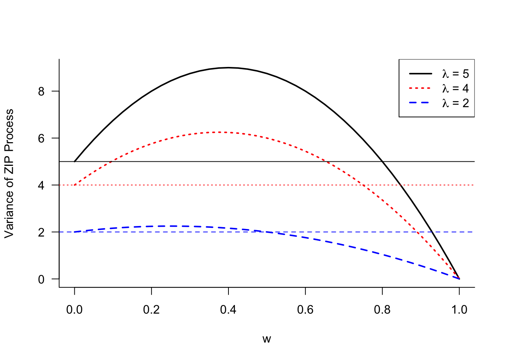
While the variance of the ZIP process can fall below the variance of its Poisson component, when enough weight is placed on the zero component, it is instructive to compare the mean and variance of the ZIP process in Equation 28.3. The variance can be written as \(\text{Var}[Y] = \mu(1+w\lambda)\). Compared to a Poisson process with mean \(\mu\), the ZIP process is overdispersed by the factor \(1+w\lambda\).
Mixing Models
If the Poisson distribution is not sufficiently dispersed for a count target, and zero inflation is not the root cause of overdispersion, what other options are available?
The Negative Binomial distribution is also a model for count data and permits more variability than the Poisson distribution. It is a popular alternative for the Poisson model in the presence of overdispersion. The Negative Binomial is often derived from independent Bernoulli experiments, similar to the Binomial random variable. While the Binomial(\(n,\pi\)) is the sum of \(n\) independent Bernoulli(\(\pi\)) experiments, the NegBin(\(k,\pi\)) random variable is the number of Bernoulli(\(\pi\)) trials until the \(k\)th event occurs.
Another way of motivating the Negative Binomial is through a mixing process and this way is particularly insightful in the context of modeling overdispersion.
In a mixing process one or more parameters are assumed random. The base distribution is considered conditional on the mixing parameter and the mixing distribution is derived as the marginal distribution, integrating (or summing) over the distribution of the mixing parameter. An example will make that easier to understand.
Poisson–Gamma mixing
Suppose that \(Y|\lambda\) has a Poisson(\(\lambda\)) distribution and that \(\lambda\) is a Gamma(\(\alpha,\beta\)) random variable. The mixing distribution, the marginal distribution, is obtained by integrating the conditional distribution over the distribution of the random parameter:
\[ p(y) = \Pr(Y=y) = \int_0^\infty p(y|\lambda) f(\lambda) \, d\lambda \] The conditional distribution in this integral, \(p(y|\lambda)\), is a Poisson and \(f(\lambda)\) is a Gamma distribution. Before looking at the marginal distribution of \(Y\) in this Poisson–Gamma mixing scheme, is there something we can learn about the mean and variance of \(Y\)?
Suppose \(Y\) has a distribution that depends on parameters \([\alpha, \beta]\) and has conditional expectation and variance \[ \text{E}[Y|\alpha] = \mu(\alpha,\beta) \quad \text{Var}[Y|\alpha] = \sigma^2(\alpha,\beta) \] If \(\beta\) is a constant and \(\alpha\) is a random variable the marginal mean and variance of \(Y\) are
\[\begin{align*} \text{E}[Y] &= \text{E}_\alpha[\text{E}[Y|\alpha]] = \text{E}_\alpha[\mu(\alpha,\beta)] \\ \text{Var}[Y] &= \text{Var}_\alpha[\text{E}[Y|\alpha]] + \text{E}_\alpha[\text{Var}[Y|\alpha]] \\ &= \text{Var}_\alpha[\mu(\alpha,\beta)] + \text{E}_\alpha\left[\sigma^2(\alpha,\beta)\right] \end{align*}\]
What does that mean? The marginal variance is larger than the average variance of the conditional distribution. By introducing a randomly varying parameter, and integrating over its distribution, we arrive at a more dispersed distribution.
Now back to the Poisson–Gamma mixing problem. It can be shown that if \(Y|\lambda \sim \text{Poisson}(\lambda)\) and \(\lambda \sim \text{Gamma}(\alpha,\beta)\), that the marginal distribution of \(Y\) is
\[ \Pr(Y=y)= {y+\alpha-1\choose\alpha-1} \left(\frac{\beta}{\beta+1}\right)^y \left(\frac{1}{\beta+1}\right)^\alpha \]
This is a Negative Binomial distribution with mean \(\text{E}[Y] = \alpha\beta\) and variance \(\text{Var}[Y] = \alpha\beta(1+\beta)\). Since \(\lambda\) follows a Gamma distribution its mean is \(\text{E}[\lambda] = \alpha\beta\). It follows that the Negative Binomial is overdispersed relative to the Poisson by the factor \((1+\beta)\).
Different parameterizations of the Gamma mixing distribution are in use. For example, the Gamma can be parameterized in terms of \(\text{E}[\lambda] = \alpha\beta = \mu\) and \(\text{Var}[\lambda] = \mu/\phi\). The resulting Negative Binomial model is then overdispersed by a factor \((1+\phi)/\phi\).
Example: Negative Binomial Analysis for Poppy Counts in RCBD
You can fit a Negative Binomial model in R with the glm.nb function in the MASS library.
library(MASS)
nbreg <- glm.nb(count ~ block + tx, data=poppies,link="log")
summary(nbreg)
Call:
glm.nb(formula = count ~ block + tx, data = poppies, link = "log",
init.theta = 11.03966246)
Coefficients:
Estimate Std. Error z value Pr(>|z|)
(Intercept) 3.0687 0.2129 14.413 < 2e-16 ***
block1 0.3866 0.1894 2.041 0.041223 *
block2 0.2676 0.1901 1.408 0.159181
block3 0.8618 0.1872 4.603 4.16e-06 ***
txA 2.6020 0.2325 11.190 < 2e-16 ***
txB 2.5906 0.2325 11.140 < 2e-16 ***
txC 0.9301 0.2381 3.906 9.38e-05 ***
txD 0.8874 0.2384 3.723 0.000197 ***
txE 0.0465 0.2474 0.188 0.850899
---
Signif. codes: 0 '***' 0.001 '**' 0.01 '*' 0.05 '.' 0.1 ' ' 1
(Dispersion parameter for Negative Binomial(11.0397) family taken to be 1)
Null deviance: 283.530 on 23 degrees of freedom
Residual deviance: 23.774 on 15 degrees of freedom
AIC: 253.97
Number of Fisher Scoring iterations: 1
Theta: 11.04
Std. Err.: 3.57
2 x log-likelihood: -233.966 The ratio of the residual deviance to its degrees of freedom is about 1.6, much improved compared to any of the Poisson-based models.
nbreg$deviance/nbreg$df.residual[1] 1.584948Both the coefficient estimates and the standard errors change compared to the Poisson analysis. Recall that the quasi-Poisson analysis affected only the standard errors of the coefficients.
Binomial–Poisson mixing
Other forms of parameter mixing are popular. The Binomial–Poisson mixing scheme assumes that the number of trials \(n\) of a Binomial(\(n,\pi\)) random variable follows a Poisson(\(\lambda\)) distribution. If \(Y|n \sim \text{Binomial}(n,\pi)\) and \(n \sim \text{Poisson}(\lambda)\), then \(Y\) has a Poisson distribution with mean \(\lambda\pi\). This Poisson is overdispersed relative to the Binomial(\(n,\pi\)) evaluated at the average sample size \(\lambda\) because \[ \lambda\pi > \lambda\pi(1-\pi) \]
Beta–Binomial mixing
The Beta-Binomial mixing model assumes that \(Y|n \sim \text{Binomial}(n,\pi)\), \(n\) is fixed, and \(\pi\) is a random variable with a Beta(\(\alpha,\beta\)) distribution. The resulting marginal distribution of \(Y\) is known as the beta-binomial distribution and has mean and variance \[ \text{E}[Y] = \frac{n\alpha}{\alpha+\beta} \quad \text{Var}[Y] = \frac{n\alpha\beta(n+\alpha+\beta)}{(\alpha+\beta)^2(\alpha+\beta+1)} \]
Binomial–Poisson–Gamma mixing
A double mixing scheme assumes that multiple parameters are random. For example, starting with a Binomial(\(n,\pi)\) random variable, we can define a Binomial–Poisson–Gamma mixing model as follows
\[\begin{align*} Y | n &\sim \text{Binomial}(n,\pi) \\ n | \lambda &\sim \text{Poisson}(\lambda) \\ \lambda &\sim \text{Gamma}(\alpha,\beta) \end{align*}\]
The marginal distribution of \(Y\) is again Negative Binomial with mean \(\text{E}[Y] = \alpha\beta\pi\) and variance \(\text{Var}[Y] = \alpha\beta\pi(1+\beta\pi)\).